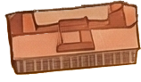
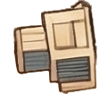
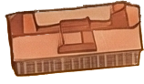
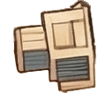
 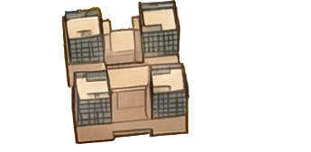
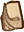
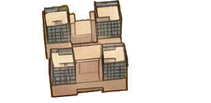
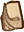
 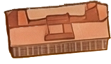
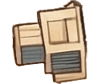
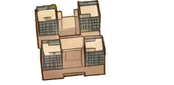
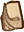
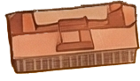
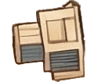
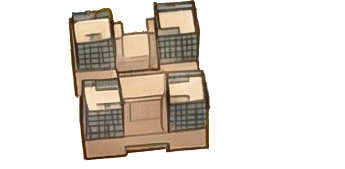
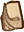


结合了实用性和美观性，融合了苏联式建筑风格与中国传统建筑元素，是天津大学的标志性建筑之一
与天津大学卫津路校区一同建成，经历了多次修缮和扩建，见证了天津大学的发展历程
兼具教学、实验和办公功能，设有多个专业实验室和教室，满足不同学科的需求
与天津大学卫津路校区一同建成，经历了多次修缮和扩建，见证了天津大学的发展历程
综合布置了多种功能空间，包括教室、实验室、设计工作室、展览厅和公共区域等
承担建筑学、城乡规划、风景园林等学科领域的教学、科研、对外交流等任务
方形合围院楼开出大小各异的窗口，空间层次立体，庭院以立瓦青砖漫地，质朴而清雅，平衡了校园的工科气质与人文底蕴
研究院包括年画剪纸雕塑厅等展览区域、展示文化遗产保护的大树画馆与大树书屋、举办文化艺术展览的北洋美术馆
冯骥才研究院致力于文化遗产保护与传承，推动传统文化的创新发展，促进文化交流与合作，是天津地域文化研究的核心阵地
于1995年天津大学百年校庆前落成，由天津大学校友会捐赠，天大校友、著名建筑师布正伟设计
总体呈金字塔形。正反面相同构造，象征天大人表里如一；塔尖高耸，象征着“巍巍学府北洋高”的厚重历史，两侧层叠阶梯浮雕，象征不断攀登的精神
东门是学校中轴线的起点，与国旗、北洋亭、求是厅、敬业湖构成横贯东西的空间组合，是天津大学的精神标识之一
形态方正，风格敦朴，通体由花岗岩砌合而成，上方有双龙戏珠浮雕、“北洋大学堂”和“1895”字样，下方是两侧石柱顶起的拱门
1995年百年校庆前落成，由天津大学校友会捐赠，建筑学院彭一刚教授借鉴北洋大学西沽老校址的建筑进行设计
北洋纪念亭四角雕刻了天津大学、北洋大学的重要精神图腾，如校训、校歌、北洋大学史略、钦字第一号证书等
天南楼正式名称为“南开大学天津大学联合研究大厦”，由天津大学和南开大学共用，横跨天津大学与南开大学校园，故简称“天南楼”或“南天门”
天南楼入驻了天津化学化工协同创新中心、南开大学药学院、先进能源材料化学教育部重点实验室等多个科研机构和实验室
天南楼是天南大“各自独立办学、相互紧密合作”办学方针的具体体现，旨在依托两校在化学和化工领域的学科优势，共同建设高水平化学化工研究中心